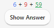

Навчання
- Колоди
- Огляд навчання
- Запитання
- Вивчення/повторне вивчення карток
- Пригадування карток
- Лічильники очікуваних карток
- Фактор розмиття
- Редагувати та Більше
- Порядок показу
- Сестринські картки та відкладання
- Клавіатурні скорочення
- Відставання
Щойно Ви знайшли колоду, яка Вам сподобалась, або ж зробили декілька нотаток, настає час розпочати навчання.
Колоди
Навчання у Anki відбувається в межах обраної колоди та вкладених у неї колод.
Ваші колоди та колоди всередині них будуть показуватися у вікні колод списком. Також, для поточного дня тут буде показано кількість карток Нові, Навчальні та Пригадувальні.

Колода стане 'поточною колодою', щойно Ви клацнете на ній, а Anki перемкнеться до вікна навчання. Повернутися до списку колод, щоб змінити поточну колоду на іншу, можна у будь-який час, клацнувши на "Колоди" у верхній частині головного вікна. (Щоб обрати нову колоду за допомогою клавіатури, можна скористатися меню "Вчити колоду". Розпочати вивчення поточної колоди можна, натиснувши s.)
Значок коліщатка, який знаходиться праворуч від колоди, дозволяє перейменувати, видалити змінити налаштування або експортувати її.
Огляд навчання
Клацнувши на колоді для навчання, Ви побачите екран з кількістю карток на сьогодні. Він називається 'Огляд навчання':

Картки діляться на три типи: Нові, Навчальні, Пригадувальні. Якщо у налаштуваннях колоди увімкнено опцію Відкласти сестринські картки, Ви можете побачити кількість відкладених карток, які позначені сірим кольором:

Щоб розпочати навчальну сесію, натисніть на кнопку Вчити зараз. Anki почне показувати Вам картки до тих пір, допоки картки, показ яких було заплановано на сьогодні, не закінчаться.
Під час навчання, Ви можете повернутися до вікна огляду, натиснувши на клавіатурі клавішу s.
Запитання
Коли картка з'являється, Ви бачите лише запитання. Після того, як Ви подумали про ймовірну відповідь, клацніть на Показати відповідь або ж натисніть клавішу пробілу. Тоді з'явиться відповідь. Абсолютно нормально, якщо Вам слід трішки подумати над відповіддю, однак, зазвичай, якщо відповідь не спала Вам на гадку протягом 10 секунд, краще відкрити її, аніж мучитися з тим, щоб її пригадати.
Коли відповідь з'явиться, Вам слід порівняти власну відповідь з показаною, і сказати Anki наскільки добре Ви її запам'ятали. Якщо Ви не довіряєте собі у визначенні правильності відповіді, то можете вказати Anki, щоб вона попросила Вас вдрукувати відповідь замість того щоб просто її показати.
Вивчення/повторне вивчення карток
Коли Ви вивчаєте нові картки, або повторно вивчаєте забуті, Anki показує картку один або декілька разів, щоб допомогти Вам її запам'ятати. Кожен показ називається 'кроком навчання'. Типово існує два кроки: 1 хвилина та 10 хвилин. Ви можете змінити кількість кроків та затримки між ними у налаштуваннях колоди.
Протягом навчання показується чотири кнопки для оцінювання:
-
Знову переміщує картку на перший крок.
-
Тяжко повторює поточний крок.
- Якщо картка знаходиться на першому кроці, затримка визначатиметься як середнє значення між Знову та Добре.
- Після першого кроку, Тяжко повторює попередню затримку.
-
Добре переносить картку на наступний крок. Якщо картка була на останньому кроці, тоді картка перетворюється у картку для пригадування (вона 'випускається'). Типово, щойно картка досягає кінця кроків навчання, її буде показано наступного дня знову, а потім проміжки між показами будуть зростати (дивіться наступний параграф).
-
Легко одразу ж перетворює картку у картку для повторювання, навіть якщо попереду були ще кроки для навчання. Типово, якщо Ви перебуваєте у режимі повторювання, картка з'явиться знову через 4 дні, а далі проміжки між показами будуть зростати. У планувальнику першої версії, кнопка "Легко" не буде показуватися у режимі повторювання оскільки вона буде використовувати той же інтервал, що й кнопка "Добре". У планувальнику версії 2 і вище коли картка перебуває у режимі повторювання, кнопка "Легко" буде збільшувати проміжок на один день.
Коли картки показуються вперше, вони знаходяться на першому кроці. Таким чином, якщо першою відповіддю на показану картку буде "Добре", наступного разу її буде показано через 10 хвилин, а початковий однохвилинний крок буде пропущено. Якщо ж Ви натиснете на кнопку "Знову", тоді картка з'явиться знову через одну хвилину.
Щоб вибрати потрібну кнопку, Ви можете натискати на клавіатурі клавіші 1, 2, 3 та 4, де 1 відповідає кнопці Знову. Натискання клавіш Пробіл або Enter рівносильне натисканню кнопки Добре.
Якщо для показу не залишилося більше карток, тоді Anki знову покаже картки для вивчення, навіть, якщо таймер затримки показу ще не скінчився. Якщо Ви бажаєте чекати на повну затримку для навчання, змініть цю поведінку у меню Інструменти > Налаштування > Повторювання > Планувальник > Обмежити навчання наперед.
Пригадування карток
Коли, вивчену раніше, картку слід пригадати, оцінити свою відповідь можна за допомогою чотирьох кнопок:
-
Знову позначає відповідь неправильною та просить Anki показувати картку у майбутньому частіше. Така картка позначається 'невдалою'. Ви знайдете більше інформації про те, як опрацьовуються невдалі пригадування у параграфі Невдачі.
-
Тяжко, типово, показує картку з трішки більшою затримкою ніж попереднього разу, і каже Anki показувати картку у майбутньому частіше.
-
Добре вказує Anki, що останній інтервал вибрано вдало, і складність вивчення картки не слід змінювати ані в сторону легкості, ані складності. При типовій початковій складності, картка буде показуватися знову приблизно через вдвічі з половиною довший інтервал аніж попереднього разу. Отже, якщо попереднього разу картка з'явилась через 10 днів, то наступний показ відбудеться через 25 днів.
-
Легко каже Anki, що обраний інтервал був надто коротким. Наступний показ картки буде заплановано значно пізніше, порівняно з 'Добре', і Anki запланує значно рідші майбутні покази. Оскільки 'Легко' дуже сильно збільшує інтервали, найкраще її використовувати для найлегших карток. Зазвичай, Ви будете відповідати 'Добре'.
Так само, як і у випадку з навчальними картками, Ви можете використовувати клавіші 1, 2, 3 та 4 щоб обрати відповідь. Натискання клавіш Пробіл або Enter рівносильне натисканню кнопки Добре.
Щоб дізнатися більше про роботу алгоритму перегляньте Налаштування колоди та ЧаПи.
Лічильники очікуваних карток
Коли показано лише запитання, Αnki виводить внизу екрану три числа, напр. 6 + 9 +59. Вони відповідають новим (синій колір), запам'ятовувальним (помаранчевий колір) та пригадувальним (зелений колір) карткам. Якщо Ви не хочете бачити ці числа, їх можна вимкнути у налаштуваннях Anki.

У планувальнику першої версії, числа показують кількість пригадувань до завершення вивчення всіх карток у даній черзі, а не загальну кількість карток. Якщо ж у Вас, для невдалих карток було налаштовано декілька кроків навчання, тоді ці числа збільшуються більш аніж на одиницю коли Ви зазнаєте невдачі з карткою, адже картку треба буде показати знову декілька разів.
Починаючи з другої версії планувальника, числа показують картки, а тому лічильник завжди збільшується на одиницю, незалежно від того, скільки кроків навчання ще залишилося.
Разом з показаною відповіддю, Anki зазначає під кожною кнопкою приблизний час, коли картка з'явиться наступного разу. Якщо Ви не хочете бачити ці показники, їх можна відключити у налаштуваннях Anki.
Фактор розмиття
Якщо, пригадуючи картку, Ви натискаєте на кнопку Легко, Anki додаватиме трішки випадкового «розмиття» щоб запобігти ситуації, коли декілька одночасно доданих карток з однаковим рейтингом чіпляються одна за одну та завжди з'являються для пригадування у той самий день. Таке розмиття буде з'являтися на кнопках відповідей коли увімкнено планувальник версії 3. Тому якщо Ви використовуєте попередню версію і помічаєте невелику різницю між тим що Ви обираєте та фактичними інтервалами появи карток, то причиною може бути саме це.
Додаткова затримка додається і для запам'ятовувальних карток, щоб вони не завжди з'являлися в однаковому порядку, однак на кнопках відповіді про це не згадується. Цю функціональність неможливо вимкнути.
Редагувати та Більше
Щоб відредагувати поточну нотатку слід натиснути на кнопку Редагувати, яка знаходиться в лівому нижньому кутку вікна. Завершивши редагування, Ви повернетесь до навчання. Вікно редагування працює схожим чином до вікна додати нотатку.
В правому нижньому кутку вікна пригадування знаходиться кнопка Більше. Вона надає доступ до ряду інших дій над поточною карткою або нотаткою:
-
Позначити Картку: Додає до картки кольоровий прапорець або ж забирає його. Прапорець з'являтиметься протягом навчання, а у вікні Навігатора за ним можна шукати позначені картки. Використання прапорця є корисним, коли ви хочете попрацювати над карткою пізніше, скажімо, знайти слово, коли повернетесь додому. Прапорці можна перейменувати у Навігаторі, якщо Ви використовуєте Anki 2.1.45+.
-
Відкласти Картку / Нотатку: Відкладає до наступного дня пригадування картки або всіх карток нотатки. (Якщо Ви хочете відновити картки швидше, слід клацнути на кнопці "повернути" у вікні Огляд навчання). Відкладання є корисним, якщо Ви не можете дати відповідь на картку зараз або ж хочете повернутися до неї пізніше. Також відкладання може відбуватися автоматично для карток тієї ж самої нотатки.
У старому планувальнику, якщо навчальні картки відкладалась, вони поверталися до черги нових карток або черги пригадувальних карток перед тим як відкластися.
Однак, у планувальнику версії 2.1, відкладання карток не скидає кроки вивчення картки.
-
Забути картку: Перемістити поточну картку до кінця нової черги.
Починаючи з версії 2.1.50+, Anki запам'ятовує початкове місце появи нової картки якщо її вперше вивчалось за допомогою планувальника версії 3. Опція "Відновити початкову позицію" дозволяє повернути картку на її початкове місце появи, коли Ви її забули.
Увімкнення опції "Скинути лічильники повторювань та провалів" скине картці лічильники пригадувань та помилок. Ця опція не видаляє історії пригадувань, яку показано внизу інформаційного вікна картки.
-
Вказати дату пригадування: Розміщує картки у черзі пригадування та показує, що вони очікуються на певну дату.
-
Призупинити картку / нотатку: Приховує пригадування картки або всіх карток нотатки допоки їх не буде відновлено вручну (для цього у навігаторі слід клацнути на кнопку призупинення). Ця опція є корисною, якщо Ви хочете уникати пригадування нотатки протягом певного часу, однак не бажаєте її видалити. У старому планувальнику, якщо навчальні картки призупинялися, вони поверталися до черги нових карток або черги пригадувальних карток перед тим як їх призупиняли.
Однак, у планувальнику версії 2.1, призупинення карток не скидає кроки вивчення картки.
-
Налаштування: Редагування налаштувань для поточної колоди.
-
Інформація про картку: Показує статистичні дані картки.
-
Інформація про попередню картку: Показує статистичні дані попередньої картки.
-
Позначити нотатку: Додає до поточної картки мітку "позначено", щоб її легко знайти у навігаторі. Ця поведінка схожа на позначення окремих карток, однак натомість працює з міткою. Якщо нотатка має декілька карток, всі вони з'являться у результатах пошуку для позначеної мітки. Натомість більшість користувачів захоче скористатися прапорцями.
-
Створити копію: Відкриває дублікат поточної нотатки у редакторі, який можна змінювати для легшого формування різновиду карток. Типово, дубльована картка створиться у тій самій колоді, що й оригінальна.
-
Видалити нотатку: Видаляє нотатку та всі її картки.
-
Повторити аудіо: Якщо картка має аудіо на передній чи зворотній сторонах, відтворити його знову.
-
Призупинити аудіо: Призупиняє аудіо, яке відтворюється.
-
Аудіо -5 с / +5 с: Перемотати поточне відтворення аудіо назад / вперед на 5 секунд.
-
Записати власний голос: Запишіть звук з мікрофону щоб перевірити вимову. Цей запис буде тимчасовим і зникне, щойно Ви перейдете до наступної картки. Скористайтеся вікном редагування, щоб додати запис на постійній основі.
-
Повторити власний голос: Повторити попередньо зроблений запис власного голосу (ймовірно, після показу відповіді).
Порядок показу
В процесі навчання картки будуть показуватися як з обраної колоди так і з вкладених в неї колод. Отже, обравши колоду "French", Ви побачите вміст колод "French::Vocab" та "French::My Textbook::Lesson 1".
Як Anki вибирає карти з колод залежить від використаного алгоритму:
-
У планувальнику версії 1, якщо колода містила вкладені колоди, картки обирались з кожної колоди по порядку.
-
У планувальнику версії 2, якщо колода містить вкладені колоди, картки для пригадування вибираються з усіх вкладених колод одночасно. При цьому обмеження накладені на вкладені колоди ігноруються - застосовується лише обмеження обраної колоди.
-
У планувальнику версії 3 також застосовуються обмеження кожної вкладеної колоди, і Вам не доведеться бачити картки у порядку появи колод. Детальніше про це розказано у параграфі Порядок сортування пригадувань.
Типово, у випадку з новими картками, Anki вибирає картки в алфавітному порядку. Так, у поданому вище прикладі, Ви спершу отримаєте картки з колоди "French", тоді "My Textbook", і насамкінець "Vocab". За допомогою цього, Ви можете контролювати порядок появи карток, додаючи важливіші картки у колоди, які знаходяться вище за списком. Коли комп'ютери сортують текст за алфавітом, символ "-" з'являється перед літерами, а "~" - після них (прим. перекладача для кирилиці це правило не працює, оскільки символ "~" з'являється перед кириличними символами). Таким чином Ви можете назвати колоду "-Vocab", щоб картки звідти з'являлись найраніше, а іншу - "~My Textbook" щоб картки з'являлись після всіх інших.
Нові картки та пригадування вибираються окремо, і Anki не чекає на очищення кожної черги перед тим, як перейти до наступної колоди. Тому, цілком ймовірно, що Ви побачите нові картки з однієї колоди, а пригадувальні - з іншої, або навпаки. Для уникнення такої поведінки, оберіть для навчання колоду, яку хочете вивчати, а не одну з батьківських колод.
Оскільки картки підчас навчання є дещо критичними щодо часу, вони вибираються з усіх колод одночасно і показуються в порядку очікування.
Щоб контролювати порядок у якому з'являються пригадування з колоди, або змінити порядок появи нових карток з впорядкованого на випадковий, перегляньте налаштування колоди. Краще відсортувати нові картки можна, змінивши порядок у навігаторі.
Сестринські картки та відкладання
Як було сказано в основних поняттях, Anki може створювати більше однієї картки для кожного об'єкту вивчення, як от лицьову→зворотну картку та зворотну→лицьову картку чи дві різні картки з закритим текстом для того ж самого тексту. Такі пов'язані картки називаються "сестринськими".
Коли Ви відповідаєте на одну з сестринських карток, Anki може запобігати показу інших, автоматично "відкладаючи" їх, в межах однієї сесії. Відкладені картки усуваються з пригадувань до початку наступного дня, або допоки Ви вручну не повернете їх за допомогою кнопки "Повернути", яка знаходиться внизу екрану огляд навчання. Anki відкладатиме сестринські картки навіть, якщо вони знаходяться у різних колодах (наприклад, якщо Ви увімкнули властивість Заміни колоди).
Відкладання можна увімкнути та налаштувати поокремо для нових та пригадувальних карток на екрані налаштування колоди.
Anki відкладатиме лише ті сестринські картки, які є новими або пригадувальними. Вона не буде ховати навчальні картки, оскільки для них вчасна поява є важливою. Однак, коли Ви вивчаєте навчальну картку, її нові та пригадувальні сестринські картки будуть відкладатися.
Завважте: Картка не може бути відкладеною і призупиненою водночас. Призупинення відкладеної картки поновить її. Відкладення призупиненої картки не працює у Anki версії 2.1.49 та новіших, у той час у старіших версіях ця дія поновлює картку.
Клавіатурні скорочення
Клавіатурні скорочення існують для більшості загальних операцій у Anki. Про багато з них можна дізнатися, переглядаючи інтерфейс: скорочення для виклику елементів меню вказано поруч з ними, а, наведення вказівника миші на кнопку, може показати скорочення у підказці.
Під час навчання, відповідь показується після натиснення на клавішу Пробіл або на клавішу Enter. Щойно відповідь стане видимою, Ви можете обрати кнопку «Добре», натиснувши на ці ж самі клавіші. Складність відповіді можна вказати за допомогою клавіш 1-4. Багатьом людям зручно відповідати на більшість карток за допомогою Пробілу, тримаючи палець над 1 на той випадок, коли вони забудуть відповідь.
Елемент «Вчити колоду» з меню «Інструменти» дозволяє швидко перемикнутися до потрібної колоди за допомогою клавіатури. Натисніть/ щоб скористатися цим інструментом. Його вікно містить перелік всіх колод під рядком фільтру. Коли Ви вводите символи, Anki показує лише ті колоди, які їх містять. Щоб ввести декілька пошукових термінів, розділіть їх пробілом, і Anki покаже лише ті колоди, у яких будуть всі шукані терміни. Наприклад обидві комбіанції "ja 1" та "on1 ja" відповідають колоді "Japanese::Lesson1".
Відставання
Якщо Ви відстаєте з пригадувальними картками, Anki змінить пріоритет для тих, які найдовше перебувають в черзі очікування. Їх буде показано випадковим чином в межах щоденного обмеження на пригадування. Такий порядок забезпечить відсутність карток, які перебуватимуть в черзі очікування нескінченно довго, однак, при додаванні нових карток, вони не з'являться у пригадуваннях допоки Ви не закінчите з заборгованими картками.
Щоб змінити порядок прострочених пригадувань, створіть відфільтровану колоду.
Коли Ви відповідаєте на прострочені картки, Anki включає цю затримку при визначенні наступного часу показу картки. Більше інформації подано у параграфі про алгоритм розподіленого повторювання в Anki.